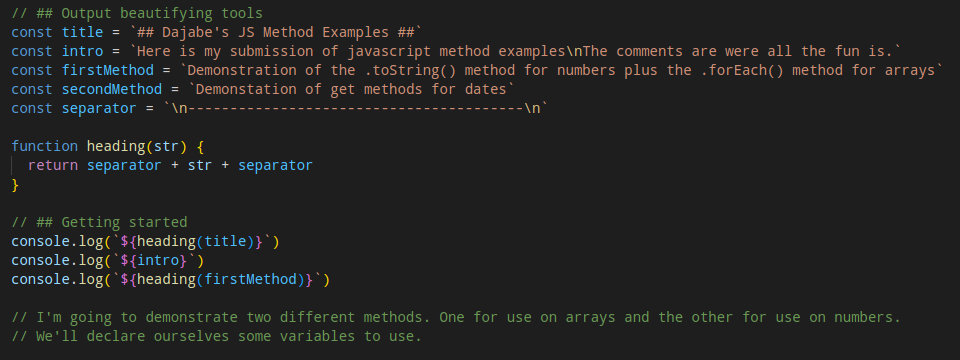
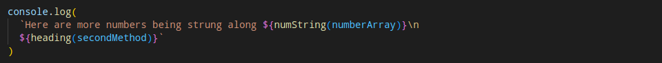
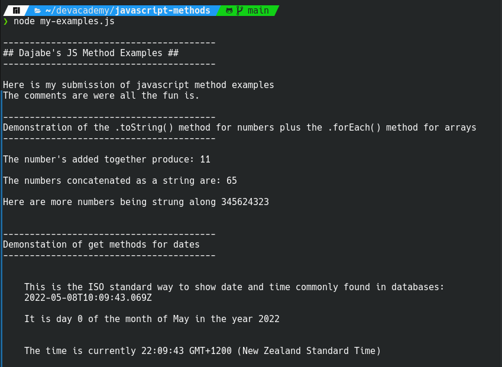

Blocks are common when it comes to problem solving and they aren't always caused by complicated problems. Sometimes you are working on a problem for longer than you expect and you find the solution. This is a great feeling and you just put it all together ready to finally solve this and move on to the next thing. Then BAM! your solution fails testing.
This is a frustrating moment when you're so close to the finish line but your code is failing. You've been going for long enough that the brain drain is very much in effect. Now a common solution here is to take a break which would be the wise option to take. If you're stubborn like me you may decide that you will finish this before you let yourself up for a break.
At this point I had already done a lot of research on the problem so first thing I did was go back to my documentation. Had I missed something? From this I performed the "try something" method. I rearranged how the code was written, "console.logged" some results and still no luck. I was very stuck and frustrated about my solution that should work not working.
I reiterated over the code several times. Astute readers will note that there is a specific troubleshooting step that I have not yet mentioned. What I had failed to do in my frustration was read the error code thoroughly. What was happening is where I wanted a specific item in an object I was instead getting the object in it's entirety. Essentially I had missed adding two parenthesis () on the end of call for a method.
There are many other examples of blocks getting in the way but I believe this one highlights how it is easy to get caught in the details and miss fundamentals. I would have saved myself 10 min of frustration if I had taken that short break and then come back with fresh eyes and checked over the fundamentals.
There is no better moment than nailing an elegant solution. All the pieces fall into place and your solution is the star of the show. I had this feeling recently when I was tackling our JavaScript Methods challenge. For the challenge we have to write some functions that demonstrate built-in methods for JavaScript and output the results to the terminal. I wanted to be able to have a tidy easy to read solution for formatting and explaining the output.
The first thing I do when creating a solution is research. First in understanding the problem we are trying to solve and second in what potential solutions already exist. In practice for this situation the methods I used were "trying something" and then "googling". I identified key text strings that would be need to be output. The text strings were a title, the intro, headings for the different methods being demonstrated, and a seperator.
This made outputting what I needed at different points of the program easy but I also wanted the code to be
easy to read. I discovered that JavaScript has something called
Template literals which allow elegant insertion of functions and variables in a text string. This means
that instead of typing "some string " + someVar + " some other string" or even worse
var1 + " " + var2 we can do something like `some string ${someVar} some other string`
or `${var1} ${var2} which is in this authors opinion much easier to read.
The second part of the solution comes from understanding how to escape special functions within strings. What
I needed here was a new line character so that we don't have to string multiple console.log() calls one after
another. This is simply achieved by using \n in your string.
The final piece of my puzzle was a simple funtion I wrote to output nice headings surrounded by seperators. The just takes the heading name variable and then returns it with the seperator before and after it. The seperator includes some newline declarations to keep the formating nice. This means I can start my program with the following code which also indicates the first method being demonstrated:

Then I can declare the second method while also outputting the last of the first method:

You could certainly go a little more in-depth here but this solution is simple, elegant and to the point. The output of a run through of the program looks like this:

Over the last week of the course I have been learning about problem solving techniques. Some of these I am already familiar with and reviewing them has helped deepen my understanding. Other techniques are new and exciting as they add new tools to my troubleshooting kit.